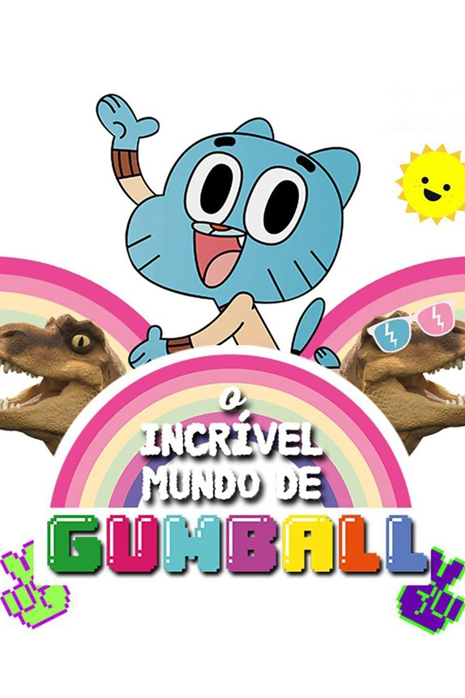

As aventuras de um poderoso guerreiro chamado Goku, seu filho Gohan e
seus aliados, que se esforçam para defender a Terra das ameaças. Eles são
auxiliados por um dragão que concede os desejos de quem quer que reúna as
sete Esferas do Dragão.
Cinco adolescentes com superpoderes vivem juntos e tentam combater o crime sem levar um
ao outro à loucura. Uma versão adolescente da Liga da Justiça.
Uma esponja-do-mar chamada Bob Esponja Calça Quadrada mora com seu caracol de estimação na
Fenda do Biquíni, no fundo do oceano. Bob trabalha no Siri Cascudo e, nas horas vagas, vive arrumando
confusões com seu melhor amigo, a estrela-do-mar Patrick.
The Fairly OddParents é uma série de desenho animado canadense-estadunidense criada por Butch Hartman sobre
as aventuras de Timmy Turner, com seus padrinhos mágicos Cosmo e Wanda. É exibido pela Nickelodeon,
sendo seu segundo maior programa de maior sucesso, atrás apenas de Bob Esponja Calça Quadrada.
Esta comédia animada de enorme sucesso gira em torno da família de mesmo nome que mora na cidade de Springfield,
em um estado americano sem nome. O pai, Homer, não é um típico homem de família. Empregado de uma usina nuclear,
ele faz o melhor para comandar sua família, mas frequentemente se vê comandado. A família inclui ainda a carinhosa
mãe de cabelo azul Marge, o filho encrenqueiro Bart, a talentosa filha Lisa e a bebê Maggie. Outros moradores de
Springfield incluem o vizinho religioso da família, Ned Flanders, o médico, Dr. Hibbert, o bartender Moe e o chefe de
polícia Clancy Wiggum.
Gumball e seu grande amigo Darwin vivem aventuras e não param de se meter em problemas.
Phineas e Ferb querem aproveitar as férias ao máximo. Nas aventuras, os dois tornam-se músicos, constroem uma montanha-russa
e uma praia no fundo do quintal e até voltam ao passado para encontrar dinossauros.

O desenho animado explora a vida familiar nos Estados Unidos, por meio do conturbado cotidiano da família Griffin, cujo chefe é
Peter, que dá o seu melhor para fazer o que é certo, mas no meio do caminho comete erros legendários. Ele é casado com Lois,
que tenta manter a família em um certo padrão de normalidade. O casal tem três filhos: a mimada adolescente Meg; o preguiçoso Chris,
de 13 anos; o caçula Stewie, uma criança diabólica; além do cachorro Brian, o mais inteligente do grupo.
Mordecai e Rigby são guardas de um parque. Mas esses melhores amigos são preguiçosos e não deixam o trabalho interferir com sua capacidade
de se divertir. Enquanto Mordecai tenta ser responsável e fazer um bom trabalho, é frequentemente desencaminhado por seu imaturo companheiro,
totalmente imune à vergonha ou ao medo e sem nenhum limite. Os amigos acabam sempre pagando pelas suas ações irresponsáveis, pois se metem em
mais confusões do que esperavam. A negligência no trabalho causa muito desgosto ao chefe temperamental da dupla, Benson.
Tom and Jerry é uma popular série de filmes de curtas-metragens americana criado por William Hanna e Joseph Barbera, produzida entre 10 de fevereiro
de 1940 e 7 de setembro de 1967 para a Metro-Goldwyn-Mayer.